拉勾网招聘职位信息数据分析
背景介绍
采用scrapy框架采集了拉勾网8月4日的所有招聘职位信息，进行简单的数据分析，主要目的是分析IT行业目前招聘的整体状况，分析技术类中后端开发的招聘形势以及Python编程语言的招聘需求。
# 导入相关模块
import pandas as pd
import numpy as np
import matplotlib.pyplot as plt
import time
import datetime
import re
import seaborn as sns
sns.set(style="ticks", palette="muted", font_scale=1.3, color_codes=True, context="talk")
import sys
reload(sys)
sys.setdefaultencoding('utf-8')
%matplotlib inline
from matplotlib.font_manager import FontProperties
font = FontProperties(fname=r"/usr/share/fonts/truetype/arphic/ukai.ttc")
from os import path
path.dirname(__name__)
数据采集
首先是获取数据，使用Python的Scrapy框架采集数据，数据采集过程在此略过...
采集的数据存储在csv文件中，该数据集是采集拉勾网一天内发布的职位招聘信息，总共8万多条招聘信息。
数据分析
数据清洗
拉勾网的招聘信息以Json格式发送到前端，整体数据比较规整，缺失数据较少，在本分析流程前事先对原始数据集的重要字段进行了缺失值填补处理、对一些分类变量进行了重新归类合并等数据清洗动作，因此，查看现在数据的缺失情况，只有dist、position_advantagei两个特征有缺失数据
data = pd.read_csv("/home/darren/Desktop/lagou_position/scrapy/lagou_job_all_dropduplicated.csv", encoding="utf-8")
# 查看company_size缺失的样本数量
data[data.company_size.isnull()].shape
# 用"少于15人"填补缺失的数据
data.company_size.fillna(u"少于15人", inplace=True)
查看数据集中非空数据百分比
#各个特征非空的样本数量
not_null = data.count()
all = data.shape[0]
# 查看数据集中非空数据百分比
not_null / all * 100
finance_stage 100.000000
city 100.000000
dist 98.252158
salary 100.000000
job_nature 100.000000
industry_field 100.000000
company 100.000000
third_tag 100.000000
published_time 100.000000
second_tag 100.000000
position_advantage 99.990527
first_tag 100.000000
last_login 100.000000
work_experience 100.000000
position_type 100.000000
position 100.000000
education 100.000000
crawl 100.000000
company_size 100.000000
day 100.000000
dtype: float64
IT行业整体的描述性分析
# position_advantage和dist的缺失值暂不处理
# 获取数据集的某些样本特征用于可视化输出
features = data.columns.values.tolist()
# 提取与salary相关度较大的特征，用于描述性探索与可视化输出
for x in [u"company_size", u"position_type", u"day", u"third_tag", u"salary", u"dist", u"company", u"published_time", u"position_advantage", u"last_login", u"position", u"crawl"]: #
features.remove(x)
# 定义一些特征和评估的映射
feature_name = [u"企业金融状况", u"城市", u"工作类型", u"行业领域", u"职位小类", u"职位大类", u"工作经验", u"学历"] # u"职位类型", ,u"公司规模"
feature_dict = dict(zip(features,feature_name))
feature_dict
method_dict = {"mean": u"平均薪资", "median": u"薪资中位数", "size": u"招聘职位数量"}
def feature_target_bar(evalute_method_str):
"""
以bar_plot的方式将IT行业整体的一些特征与薪资关系进行可视化输出
"""
fig, axes = plt.subplots(4,2, figsize=(18,40), sharex=False, sharey=False)
axes_subject_list = [j for i in axes.tolist() for j in i]
evalute_method = "np." + evalute_method_str
for index, feature in enumerate(features):
df_salary= data.groupby(feature)["salary"].aggregate([eval(evalute_method)]).sort_values(evalute_method_str, ascending=False)
g = sns.barplot(y=df_salary.index, x=df_salary[evalute_method_str], ax=axes_subject_list[index], palette="husl")
axes_subject_list[index].set_yticklabels(g.get_yticklabels(), fontproperties=font, fontsize=18)
axes_subject_list[index].set_xlabel("")
axes_subject_list[index].set_title(u"不同" + feature_dict[feature] + method_dict[evalute_method_str], fontsize=25, fontproperties=font)
axes_subject_list[index].set_ylabel("")
axes_subject_list[index].xaxis.grid(True, linestyle = "-.",)
text = method_dict[evalute_method_str] + 'k(￥)' if evalute_method_str in ["mean", "median"] else method_dict[evalute_method_str]
# 将x轴以文本plt.text的形式写入axis对象中
plt.text(-3.8, 5.0, s=text, ha='center', va='center', fontsize=25, fontproperties=font)
fig.tight_layout()
# fig.savefig("/home/darren/Desktop/salary_mean & features.png")
IT行业整体招聘需求
主要探讨职位招聘需求、职位平均/中位数薪资与招聘企业的金融状况、企业规模，所属行业的细分领域，求职者学历、工作经验的关系。之所以要评估薪资的中位数，主要是尽量减小一些高薪岗位的薪资可能会引起的左偏现象。
for i in method_dict.keys():
feature_target_bar(i)
不同规模的公司的招聘需求和薪资图是双y轴坐标图，右侧y轴坐标表示的是不同规模的公司的招聘需求占总招聘需求的百分比（注意和下面的双y坐标轴的百分比的区别）
# 职位招聘需求、平均薪资与公司规模的关系
d_company_salary = data.groupby('company_size')["salary"].aggregate([np.size, np.mean, np.median]).sort_values("size", ascending=True)
d_company_salary["property"] = d_company_salary["size"] / d_company_salary["size"].sum() * 100
fig, ax1 = plt.subplots(figsize=(8,6)) # 使用subplots()创建窗口
ax2 = ax1.twinx() # 创建第二个坐标轴
x_list = range(len(d_company_salary))
ax1.plot(x_list, d_company_salary["mean"], linewidth = 2, ls="-.", marker="^", label=u"平均薪资")
ax1.plot(x_list, d_company_salary["median"], linewidth = 2, ls='--', marker="v", label=u"薪资中位数")
ax2.plot(x_list, d_company_salary["property"], linewidth = 3, color="c", marker="o", label=u"职位需求量 %")
ax1.set_xlabel(u'公司规模', fontproperties=font, fontsize = 16)
ax1.set_ylabel(u'薪资 k(￥)', fontproperties=font, fontsize = 16)
ax2.set_ylabel(u'招聘职位百分比 %', fontproperties=font, fontsize = 16)
ax1.set_xlim(0, 5.4) # 此处必须设置 set_xlim(0,...),起始位置必须是0，否则15人以下就不显示？
ax1.set_xticklabels(d_company_salary.index, fontproperties=font, fontsize=16, rotation=30)
ax1.xaxis.grid(True, linestyle = "-.",)
ax1.yaxis.grid(True, linestyle = "-.",)
ax1.legend(loc=2, prop=font)
ax2.legend(loc=4, prop=font)
ax1.set_title(u'不同规模的公司的招聘需求和薪资',fontproperties=font,fontsize=25)
<matplotlib.text.Text at 0x7f21a4798610>
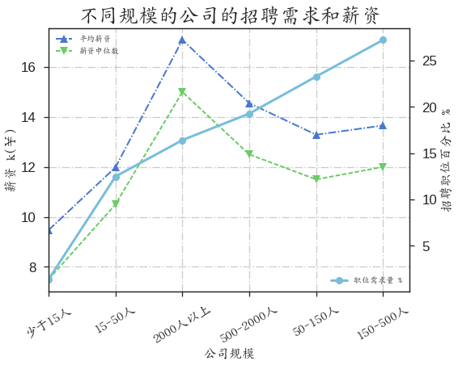
由于拉勾网是专业的互联网招聘平台，招聘信息以IT行业为主，整体薪资水平是偏高的。从上面的柱状图可看出，招聘薪资与招聘企业的金融状况、招聘企业所属的行业领域、求职者的学历与工作经验等特征均有关联性。
根据招聘企业的金融状况可分成上市公司、成熟、成长、初创性公司，根据上面的柱状图明显看出初创性公司的薪资偏低，而成熟性且融资规模较大的企业的薪资较高。
分析一线和热门二线城市的薪资柱状图，明显看出一线城市的平均薪资明显高于其他城市（天津除外），尤其以北京的薪资最高，而二线的杭州薪资也较高，可能与阿里巴巴等互联网公司坐落杭州有关。
互联网相关的职位薪资（职业小类）中明显看出，人工智能的薪资最高，这也反映出当前的人工智能领域的大热。
此外，对比平均薪资和薪资的中位数可以发现一些不同之处，这是由于一些离群的样本点将样本均值拉低或拉高，用中位数能较好的反映集中趋势。
从公司规模与薪资和招聘需求曲线看，IT行业招聘职位需求最多的不是大型公司而是50-500人规模的公司，薪资上，大型公司的薪资最高，50-500规模的次之，50人以下的公司招聘需求和薪资都较低。
简而概之，从各个城市的招聘职位需求看，北京的招聘职位最多，上海次之，从公司规模看中型公司的招聘寻求最大，大型公司次之，小型公司的需求量较小；从薪资上看，大型公司的薪资最高，其次是中型公司，小公司最低，因此，IT行业的最佳求职地为北京或上海，公司可选择中型的上市或成熟型公司。
IT行业各领域描述性分析
以上是从整体上对拉勾网的IT招聘进行定性分析，接下来对IT行业七大领域，技术、产品、运营、职能、金融、市场与销售、设计进行简单的描述性分析
# 不同职业的职位数量、平均薪资、薪资中位数
IT_domains = data.groupby(["first_tag", "third_tag"])["salary"].aggregate([np.size, np.mean, np.median])
IT_domains = IT_domains.reset_index()
# IT行业各领域的职位比例
position_num = IT_domains.groupby(["first_tag"])["size"].sum() / IT_domains["size"].sum() * 100
# IT行业各领域的平均薪资
position_mean = IT_domains.groupby(["first_tag"])["mean"].mean().sort_values(ascending=False)
plt.figure(figsize=(8,6))
g = sns.barplot(y=position_mean.index, x=position_mean.values, palette="BuPu_d")
plt.yticks(g.get_yticks(), fontproperties=font, fontsize=16)
plt.xlabel(u"平均薪资 k (￥)", fontsize=16, fontproperties=font)
plt.ylabel("")
plt.title(u"IT行业不同领域薪资", fontproperties=font, fontsize=25)
plt.gca().xaxis.grid(True, linestyle = "-.",)
"""
plt.pie参数
x (每一块)的比例，如果sum(x) > 1会使用sum(x)归一化
labels (每一块)饼图外侧显示的说明文字
explode (每一块)离开中心距离
startangle 起始绘制角度,默认图是从x轴正方向逆时针画起,如设定=90则从y轴正方向画起
shadow 是否阴影
labeldistance label绘制位置,相对于半径的比例, 如<1则绘制在饼图内侧
autopct 控制饼图内百分比设置,可以使用format字符串或者format function
'%1.1f'指小数点前后位数(没有用空格补齐)
pctdistance 类似于labeldistance,指定autopct的位置刻度
radius 控制饼图半径
"""
vals = range(len(position_num)) #创建数据系列
labels = position_num.index.values.tolist()
plt.figure(1, figsize=(7,7))
plt.pie(position_num.values, labels=labels, autopct='%1.2f%%',
pctdistance=.8, shadow=False, startangle=60,radius=1.2,
labeldistance=1.06, colors=('b', 'g', 'r', 'c', 'y', 'orange', 'm'),
textprops={"fontproperties": font, "fontsize":12})
plt.title(u'IT行业各领域职位需求百分比',fontsize=25, fontproperties=font)
plt.axis('equal')
(-1.3429042534959512,
1.329370895558277,
-1.3334685921667122,
1.3271730638043182)
IT行业七大领域中职位需求最多的是技术类，其次是产品类，发布职位最少的是金融类，而薪资方面，平均薪资最高的是金融类，其次是技术类。
IT行业薪资与城市
# 对不同城市和IT行业七大领域进行分组，并对特征salary进行数量统计、平均、中位数计算
d_city = data.groupby(["city", "first_tag"])["salary"].aggregate([np.size, np.mean, np.median])
d_city = d_city.reset_index()
# 建立城市名字列表用于后续图的tickslabels
city_list = data.groupby(["city"])["salary"].mean().sort_values(ascending=False).index.values.tolist()
plt.figure(figsize=(12,20))
# with sns.color_palette(sns.palplot(sns.xkcd_palette(colors)), n_colors=9):
g = sns.barplot(y="first_tag", x="mean", data=d_city, hue="city", hue_order=city_list, palette="Set1")
plt.yticks(g.get_yticks(), fontproperties=font, fontsize=16)
plt.xlabel(u"平均薪资 k (￥)", fontsize=16, fontproperties=font)
plt.ylabel("")
plt.title(u"IT行业各领域各城市薪资", fontproperties=font, fontsize=25)
plt.gca().xaxis.grid(True, linestyle = "-.",)
plt.legend(loc=7,prop=font, fontsize=17)
<matplotlib.legend.Legend at 0x7f219c64f950>
plt.figure(figsize=(12,20))
g = sns.barplot(y="first_tag", x="size", data=d_city, hue="city", hue_order=city_list, palette="Set1")
plt.yticks(g.get_yticks(), fontproperties=font, fontsize=16)
plt.xlabel(u"招聘职位数量", fontsize=16, fontproperties=font)
plt.ylabel("")
plt.title(u"IT行业各领域各城市招聘职位数量", fontproperties=font, fontsize=25)
plt.gca().xaxis.grid(True, linestyle = "-.",)
plt.legend(loc=7,prop=font, fontsize=17)
<matplotlib.legend.Legend at 0x7f219c0e4250>
从IT行业各个领域的平均薪资和招聘职位数量可知，无论从招聘数量还是平均薪资北京的老大地位很牢固（除了金融领域），其次是上海，再之是深圳，然后是杭州、广州。很有意思的一个现象是IT行业的金融领域，虽然北京的招聘需求仍旧是最大的，但平均薪资低于上海和深圳，这与中国南方的一线城市的金融行业发展相吻合，另一个现象是厦门的金融领域薪资最高，超过了上海，但招聘职位数量太少，只有3个职位需求。
厦门的IT行业七大细分领域的招聘整体状况
其中，size表示的是招聘职位的数量，mean表示的是职位的平均薪资，midian表示的是薪资中位数
d_city[d_city["city"] == u"厦门"]
| city | first_tag | size | mean | median | |
|---|---|---|---|---|---|
| 21 | 厦门 | 产品 | 378.0 | 10.279101 | 10.00 |
| 22 | 厦门 | 市场与销售 | 184.0 | 8.388587 | 7.25 |
| 23 | 厦门 | 技术 | 403.0 | 12.493797 | 11.50 |
| 24 | 厦门 | 职能 | 59.0 | 6.745763 | 5.00 |
| 25 | 厦门 | 设计 | 188.0 | 9.425532 | 9.00 |
| 26 | 厦门 | 运营 | 393.0 | 7.541985 | 6.00 |
| 27 | 厦门 | 金融 | 3.0 | 29.666667 | 30.00 |
IT行业不同领域的薪资与求职者关系分析
# 主要从求职者的学历和工作经验探讨IT七大分支领域的薪资和招聘需求
jobseeker_education = data.groupby(["education", "first_tag"])["salary"].aggregate([np.size, np.mean])
jobseeker_education = jobseeker_education.reset_index()
education_list = data.groupby("education")["salary"].count().sort_values(ascending=False).index.values.tolist()
param_dist = {"education": u"学历", "city": u"城市", "work_experience": u"工作经验", "size": u"数量", "mean": u"平均薪资"}
jobseeker_experience = data.groupby(["work_experience", "first_tag"])["salary"].aggregate([np.size, np.mean])
jobseeker_experience = jobseeker_experience.reset_index()
experience_list = data.groupby("work_experience")["salary"].count().sort_values(ascending=False).index.values.tolist()
def domains_relation(dataframe, evalute_method, hue_param, hue_order=None):
plt.figure(figsize=(8,6))
g = sns.barplot(x="first_tag", y=evalute_method, data=dataframe, hue=hue_param, hue_order=hue_order, palette="Set1")
plt.xticks(g.get_xticks(), fontproperties=font, fontsize=16)
plt.ylabel(u"招聘职位{}".format(param_dist.get(evalute_method)), fontsize=16, fontproperties=font)
plt.xlabel("")
plt.title(u"IT行业各领域招聘职位{0}与{1}".format(param_dist.get(evalute_method), param_dist.get(hue_param)), fontproperties=font, fontsize=20)
plt.gca().yaxis.grid(True, linestyle = "-.",)
plt.legend(loc="best",prop=font, fontsize=17)
for method in ["size", "mean"]:
domains_relation(jobseeker_education, method, "education", education_list)

for method in ["size", "mean"]:
domains_relation(jobseeker_experience, method, "work_experience", experience_list)
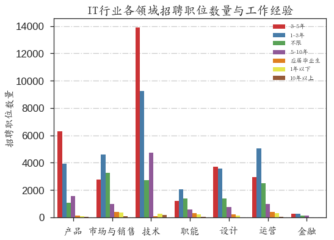
招聘需求要求最多的学历是本科，其次是大专，只有在市场与销售领域，本科需求略低于大专；工作经验上，技术相关的领域需求最大的是3-5年工作经验，其次是1-3年，而其他非技术的需求最多的是1-3年，其次是3-5年；
薪资方面，基本呈现出学历越高、工作经验越丰富薪资越高的趋势，偶尔有特殊情况。
一般而言，求职者的学历较高或工作经验丰富，其薪资较高，这与上面的柱状图的整体趋势是吻合的；招聘需求最多的学历是本科，其次是大专，工作经验要求3-5年或1-3年居多。
IT行业不同领域的薪资与招聘企业关系分析
# 从招聘企业的规模和金融状况探讨其与招聘职位薪资、招聘需求的关系
employee_finance = data.groupby(["finance_stage", "first_tag"])["salary"].aggregate([np.size, np.mean])
employee_finance = employee_finance.reset_index()
employee_field = data.groupby(["industry_field", "first_tag"])["salary"].aggregate([np.size, np.mean])
employee_field = employee_field.reset_index()
# education_list = data.groupby("education")["salary"].count().sort_values(ascending=False).index.values.tolist()
param_dist = {"industry_field": u"行业领域", "city": u"城市", "finance_stage": u"金融状况", "size": u"数量", "mean": u"平均薪资"}
def domains_employee(dataframe, evalute_method, hue_param, hue_order=None):
plt.figure(figsize=(12,8))
hue_order = data.groupby(hue_param)["salary"].aggregate(eval('np.'+evalute_method)).sort_values(ascending=False).index
g = sns.barplot(x="first_tag", y=evalute_method, data=dataframe, hue=hue_param, hue_order=hue_order, palette="Set1")
plt.xticks(g.get_xticks(), fontproperties=font, fontsize=16)
plt.ylabel(u"招聘职位{}".format(param_dist.get(evalute_method)), fontsize=16, fontproperties=font)
plt.xlabel("")
plt.title(u"IT行业各领域招聘职位{0}与企业{1}".format(param_dist.get(evalute_method), param_dist.get(hue_param)), fontproperties=font, fontsize=20)
plt.gca().yaxis.grid(True, linestyle = "-.",)
plt.legend(loc="best",prop=font, fontsize=17)
for method in ["size", "mean"]:
domains_employee(employee_finance, method, "finance_stage")
for method in ["size", "mean"]:
domains_employee(employee_field, method, "industry_field")
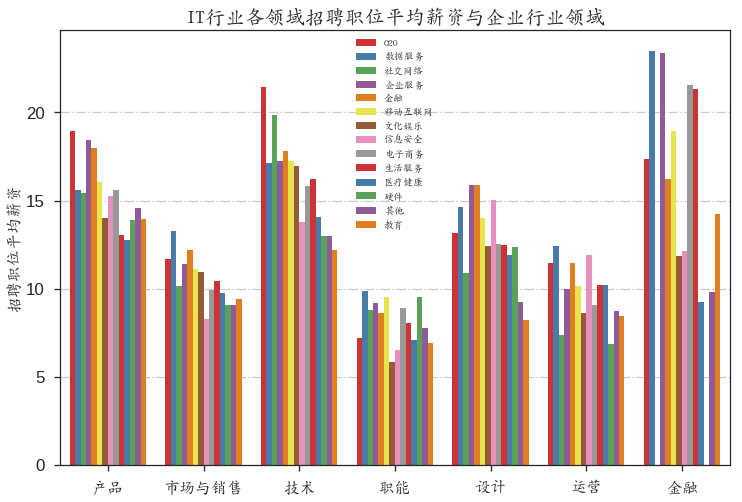
招聘需求中最多的是技术领域，上市公司和成长性公司的招聘需求旺盛，但平均薪资最多的却是成熟型公司其次才是上市和成长型公司。从公司所属类型上看，移动互联网的招聘需求最多（部分原因是分类的时候将所有跟移动互联网沾边的公司均划分到移动互联网领域了），薪资上，金融领域最高，接着是O2O、社交网络、数据服务等一些新型的网络科技公司，超过了传统的互联网公司的薪资水平。
IT七大领域的技术类中的后端开发岗位描述性分析
def IT_occupies(dataframe, content, evaluate_method):
"""计算拉勾网技术大类中后端开发的职位数量、薪资情况"""
# 获取IT技术类中的后端开发岗位信息
technology_backend = dataframe.loc[dataframe["second_tag"]==u"后端开发",:]
# 统计所有后端开发编程语言的职位需求量、平均薪资、薪资中位数
tech_backend = technology_backend.groupby(["third_tag"])["salary"].aggregate([eval("np."+evaluate_method)]).sort_values(evaluate_method, ascending=False).reset_index()
# 获取Python的职位信息用于后续画图的annotate的text坐标位置和显示的数字
python_index = tech_backend.loc[tech_backend["third_tag"] == u"Python", :].index.values[0]
python_value = tech_backend.loc[tech_backend["third_tag"] == u"Python", :][evaluate_method].values[0]
# 通过plt.subplots()建立一个axis子图用于后续绘图
fig, ax = plt.subplots(figsize=(10,8))
# 调用seaborn的barplot进行绘图
g = sns.barplot(y="third_tag", x=evaluate_method, data=tech_backend, palette="PuBu_d", ax=ax)
ax.set_yticklabels(g.get_yticklabels(), fontproperties=font, fontsize=18)
# 确定annotate的text文本位置的x坐标位置
annotate_x_delta = tech_backend[evaluate_method][0] / 10
ax.set_xlabel(content, fontsize=16, fontproperties=font)
ax.set_ylabel("")
ax.set_title(u"后端开发"+content, fontproperties=font, fontsize=20)
# sns.despine()
ax.annotate(str(int(python_value)), xy = (python_value, python_index), xytext = (python_value+annotate_x_delta, python_index+3), fontproperties=font, fontsize=20, arrowprops = dict(facecolor = 'k'))
ax.xaxis.grid(True, linestyle = "-.",)
# 绘制后端开发编程语言百分比饼图
if evaluate_method == "size":
# 计算后端开发各编程语言的职位比例
tech_backend["position_property"] = tech_backend["size"] / tech_backend["size"].sum() * 100
pie_data = tech_backend.loc[tech_backend["position_property"] > 1, ["third_tag", "position_property"]]
less_than_one = 100 - pie_data["position_property"].sum()
pie_data.loc[pie_data["third_tag"] == u"后端开发其它", "position_property"] += less_than_one
pie_data.sort_values("position_property", ascending=False, inplace=True)
num = len(pie_data)
vals = range(num) #创建数据系列
labels = pie_data["third_tag"]
explode = np.zeros(num)
index_py = pie_data[pie_data["third_tag"] == u"Python"].index.values[0]
explode[index_py] += 0.15
fig1,ax1 = plt.subplots(figsize=(6,6))
ax1.pie(pie_data["position_property"], labels=labels, autopct='%1.2f%%',
pctdistance=.8, shadow=False, startangle=20,radius=1.2,
labeldistance=1.06, colors=('b', 'g', 'r', 'c', 'y', 'orange', 'm', 'yellowgreen', 'gold', 'lightskyblue', 'lightcoral'),
textprops={"fontproperties": font, "fontsize":12}, explode=explode)
ax1.set_title(u'后端开发职位分布',fontsize=20, fontproperties=font)
ax1.axis("equal")
# fig.savefig("/home/darren/Desktop/backend_techww.png")
IT_occupies(data, u"招聘职位数量", "size")
IT_occupies(data, u"平均薪资 k(￥)", "mean")
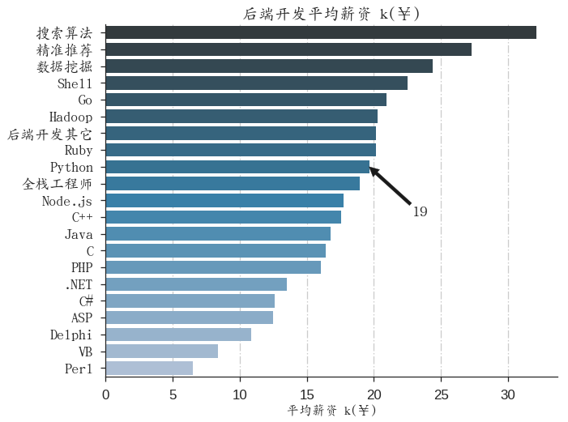
IT_occupies(data, u"薪资中位数 k(￥)", "median")
Java的招聘职位信息最多,有2700多招聘职位，占比29.37%，编程语言的老大地位不可撼动！PHP职位需求次之，占比14.08%，后续分别是C、C++、.NET、Python，其中Python日需求职位不到400个，占比5.24%。（注：虽然.NET不算真正的编程语言，但拉勾网的数据是如此分类，在这也一并当成一门编程语言看待，数据挖掘、精准推荐等类同）
薪资方面，最高的是数据挖掘和推荐算法类、其次是一些新兴编程语言如Go，Python的平均薪资较高，达到19K，高于Java、PHP、C、C++等。
注意：拉勾网发布薪资是一个区间范围，因此本文采取的是该区间的平均值，但从现实生活的规律看，使用薪资区间的最低值比较符合逻辑。
各大城市的后端开发语言的职位需求和薪资水平
# seaborn的pointplot或matplotlib的plot的点的类型
markers = [
'd', '<', '.', '*', 'x', 'o',
'3', '4', 's', 'p', ',', 'h', '1', 'H', '+',
'D', '^', '2','v', '>', '|'
] # '_',
param_dist = {"city": u"城市", "size": u"职位需求百分比 %", "mean": u"平均薪资 k(￥)",
"median": u"薪资中位数 k(￥)", "company_size": u"企业规模",
"finance_stage": u"企业金融状况", "work_experience": u"工作经验", "education": u"学历"}
def tech_backend_plot(second_feature, evaluate_method, lang_part=True, big_feature=u"后端开发"):
"""计算各大城市的后端开发的编程语言的职位需求和薪资状况，只取职位需求百分比>5的常见编程语言
big_feature: IT七大分支领域的一个，默认是技术
second_feature: 是数据集中除了技术的其他特征，包括city,company_size, education etc端
evaluate_method: 表示的是对data数据分组后对各个分组实施的统计方法，主要有np.mean,np.median,np.size
lang_part: 意思是要不要取后端编程语言的一部分，默认是True,否则将绘制所有的后端开发语言
"""
technology_backend = data.loc[data["second_tag"] == big_feature,:]
# 只抽取后端编程语言中招聘需求大的前7个编程语言的名称
targeted_lang = technology_backend['third_tag'].value_counts().index.values.tolist()[:7]
# 删除"后端开发其他语言"，先用"|".join(targeted_lang)再执行以下语句
if u'\u540e\u7aef\u5f00\u53d1\u5176\u5b83' in targeted_lang:
targeted_lang.remove(u'\u540e\u7aef\u5f00\u53d1\u5176\u5b83')
tech_backend = technology_backend.groupby([second_feature, "third_tag"])["salary"].aggregate([eval("np." + evaluate_method)]).reset_index()
# 只评估Java、C、C++、Python等6个后端编程语言
if lang_part:
tech_backend = tech_backend[tech_backend['third_tag'].str.contains(u'Java|PHP|C|C\+\+|\.NET|Python')]
# 后端编程语言的名称列表，用于绘图的tickslabels设置
second_feature_list = tech_backend[second_feature].unique().tolist()
# 对评估职位需求的，采用百分比
if evaluate_method == "size":
for i in second_feature_list:
one_data = tech_backend.loc[tech_backend[second_feature] == i, :]
index_ = one_data.index
total_ = one_data[evaluate_method].sum()
# 在tech_backend的DataFrame新建一个特征property，存放计算各个编程语言在second_feature中的百分比，如second_feature是city
tech_backend.ix[index_, "property"] = one_data[evaluate_method] / total_ * 100
# 用于seaborn barplot的hue_order顺序列表
backend_lang = tech_backend.groupby("third_tag")[evaluate_method].sum().sort_values(ascending=False).index.values.tolist()
# 用于seaborn barplot的order顺序列表
backend_second_feature = tech_backend.groupby(second_feature)[evaluate_method].sum().sort_values(ascending=False).index.values.tolist()
plt.figure(figsize=(12,10))
with sns.color_palette("PuBuGn_d"):
if evaluate_method == "size":
y_str = "property"
else:
y_str = evaluate_method
g = sns.pointplot(y=y_str, x=second_feature, hue="third_tag", hue_order=backend_lang, order=backend_second_feature,
data=tech_backend, size=10, markers=markers, index=True,
aspect=1.2, legend=False, dodge=True)
plt.xticks(g.get_xticks(), fontproperties=font, fontsize=16, rotation=45)
plt.ylabel(u"{0}".format(param_dist.get(evaluate_method)), fontsize=16, fontproperties=font)
plt.xlabel("")
plt.title(u"后端开发编程语言与不同{0}的{1}".format(param_dist.get(second_feature),param_dist.get(evaluate_method)), fontproperties=font, fontsize=23)
plt.gca().yaxis.grid(True, linestyle = "-.",)
plt.legend(loc="best",prop=font, fontsize=8)
tech_backend_plot("city", "size")

tech_backend_plot("city", "mean")
tech_backend_plot("city", "median")
北京、上海、深圳、广州、杭州的IT行业需求量最多，薪资也较高（广州薪资偏低），属于第一梯队；从各编程语言看，Java绝对的霸主地位，但在一线发达城市，Java语言所占的比例远低于其他城市的比例，即一线发达城市各种编程语言都有发展机会，而二线城市还局限在几门编程语言中，如济南，Java占济南职位需求的80%左右，PHP占比15%左右，.NET占比5%左右；Python需求占比最大的是北京，其次是上海和杭州，相比其他语言，Python招聘需求较小，但薪资较高。
tech_backend_plot("finance_stage", "size")
从招聘需求上看，Java的招聘需求最多，其次是PHP，Python招聘职位较低，但Python的薪资较高。
tech_backend_plot("finance_stage", "mean")

tech_backend_plot("finance_stage", "median")

tech_backend_plot("company_size", "size")

tech_backend_plot("company_size", "mean")
tech_backend_plot("company_size", "median")
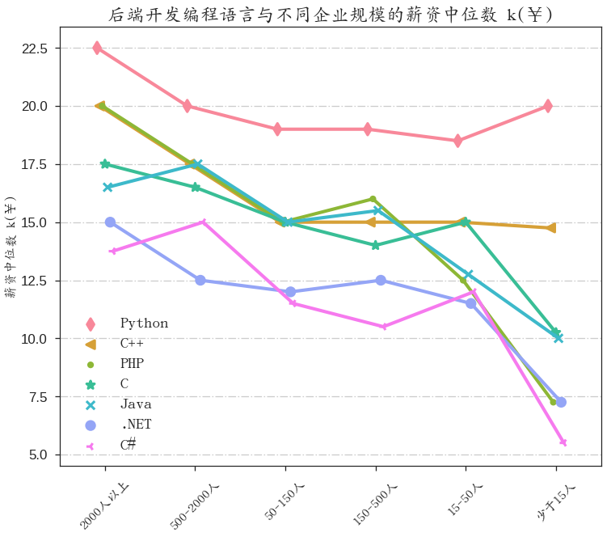
公司规模与招聘需求和薪资折线图看出，大型公司对Java的需求最多，小型公司对PHP和Python的需求较大（注意，图中一种类型的公司中各个编程语言占比之和是100%，其他折线图也类似）。薪资方面，大型公司的薪资最高，其次是中型公司，最低是小型公司。
tech_backend_plot("work_experience", "size")
tech_backend_plot("work_experience", "mean")
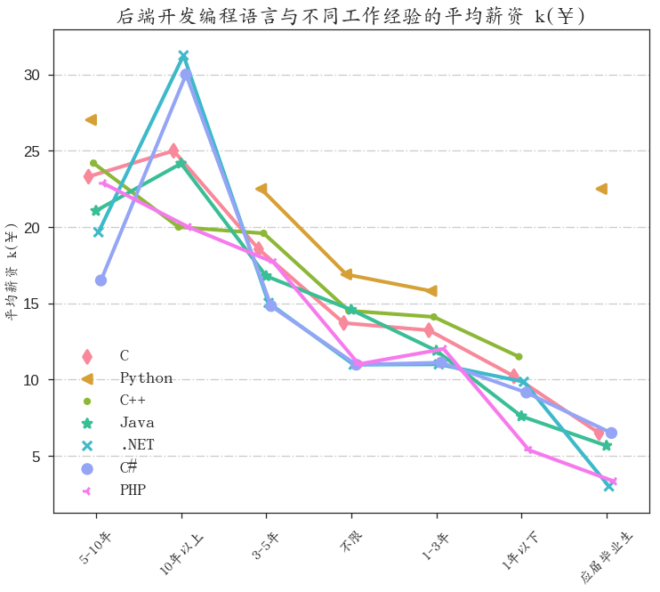
薪资基本与工作经验成正比。
tech_backend_plot("education", "median")
tech_backend_plot("education", "mean")
tech_backend_plot("education", "size")
上图表示的是不同学历的职位需求百分比，即本科学历中，各个后端开发语言招聘需求的百分比（本科学历中这6种编程语言的百分比之和为100%），由于C#和.NET在硕士学历上没有招聘需求，所以，虽然C++、C、Python的硕士学历需求百分比明显增多，并不一定代表了这3门编程语言对高学历的绝对需求超过了其他相对低学历，只是相对而言，C和C++更青睐于高学历求职者。从前面的分析可知，本科和大专是招聘企业的首先学历。
薪资与学历基本成正比
拉勾网Python职位描述性分析
param_dist = {"size": u"招聘职位数量与百分比", "mean": u"平均薪资",
"median": u"薪资中位数",
}
def series_bar_plot(lang, feature, evaluate_method):
"""
绘制一门编程语言的职位需求、薪资的柱状图
lang: 编程语言名称
feature: 数据分组的依据特征
evaluate_method: 实施到分组后的数据的统计方法
"""
# 获取一门编程语言的所有招聘信息数据
data_lang = data[data["third_tag"] == lang]
# 根据feature将数据集分组，并依据evaluate_method对分组后的数据进行统计
one_series = data_lang.groupby([feature])['salary'].aggregate([eval('np.'+evaluate_method)]).sort_values(evaluate_method, ascending=False)
fig, ax1 = plt.subplots(figsize=(8,6)) # 使用subplots()创建窗口
g = sns.barplot(y=one_series[evaluate_method], x=one_series.index, palette="BuGn_d", ax=ax1)
# 统计方法是cout/size就绘制双y轴图
if evaluate_method == "size":
ax2 = ax1.twinx() # 创建第二个坐标轴
x_list = range(len(one_series))
y_point_list = one_series[evaluate_method] / one_series[evaluate_method].sum() * 100
ax2.plot(x_list, y_point_list, linewidth = 3, color="g", marker="o", label=u"职位需求百分比")
ax2.legend(loc="best", prop=font)
ax2.set_ylabel(u'招聘职位数量百分比%', fontproperties=font, fontsize = 16)
ax1.set_xlabel("")
ax1.set_ylabel(param_dist.get(evaluate_method), fontsize=16, fontproperties=font)
x_ticks_l = [i for i in one_series.index]
ax1.set_xticklabels(x_ticks_l, fontproperties=font, fontsize=16, rotation= 90 if feature == "finance_stage" else 30)
ax1.yaxis.grid(True, linestyle = "-.",)
ax1.set_title(lang+param_dist.get(evaluate_method),fontproperties=font,fontsize=25)
plt.xticks(g.get_xticks(), fontproperties=font, fontsize=16)
series_bar_plot("Python", "city", "size")
series_bar_plot("Python", "city", "mean")

series_bar_plot("Python", "city", "median")
series_bar_plot("Python", "finance_stage", "size")
series_bar_plot("Python", "finance_stage", "mean")
series_bar_plot("Python", "finance_stage", "median")
for i in ["size", "mean", "median"]:
series_bar_plot("Python", "company_size", i)
for i in ["size", "mean", "median"]:
series_bar_plot("Python", "work_experience", i)
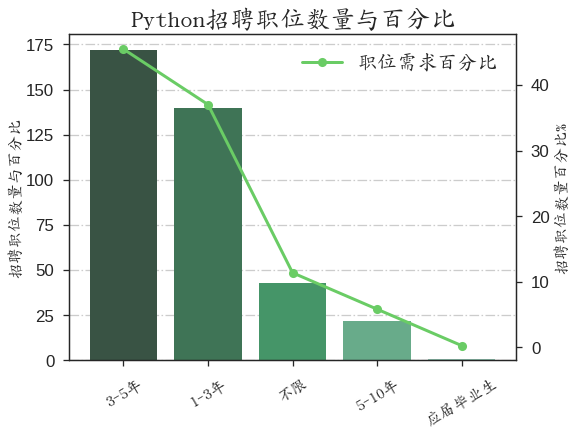
for i in ["size", "mean", "median"]:
series_bar_plot("Python", "education", i)
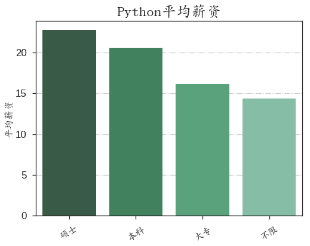
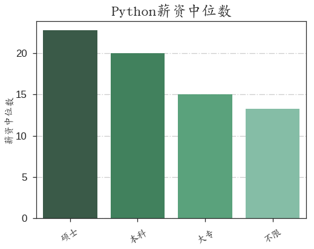
Python的招聘需求总量不多，但平均薪资较高，这也符合新兴语言的特点。
Python招聘需求最多的依旧是北京，其次上海，平均薪资最高的还是北京，其次是深圳和上海。从招聘公司的角度分析，中型的成熟和成长性公司的招聘需求和薪资水平都较高，大型上市公司的薪资高但招聘需求没有中型公司多，50人以下的初创公司的招聘需求和薪资都是最低。
工作经验方面，需求最大的是3-5年，其次是1-3年，薪资跟工作经验基本成正比，有一个特例是应届毕业生，其平均薪资竟然高于有3年工作经验的求职者！仔细分析发现，应届毕业生的招聘需求非常之低，所以，应届毕业生的高薪其实是由于样本量太少又又受到组内离群值的干扰，造成平均薪资很高。
查询数据集，发现只有北京高维数金科技有限公司明确标明招聘应届毕业生，平均薪资是22k，因此本文中应届毕业生的信息没有太大参考意义。
平均薪资与学历也成正比，但本科学历的招聘需求远远超过其他学历。
# data_lang = data[data["third_tag"] == "Python"]
# one_series = data_lang.groupby(["company_size"])['salary'].aggregate([np.size]).sort_values("size", ascending=False)
data_py = data[data["third_tag"] == "Python"]
data_py.loc[data_py["work_experience"] == u"应届毕业生", :]
| finance_stage | city | dist | salary | job_nature | industry_field | company | third_tag | published_time | second_tag | position_advantage | first_tag | last_login | work_experience | position_type | position | education | crawl | company_size | day | |
|---|---|---|---|---|---|---|---|---|---|---|---|---|---|---|---|---|---|---|---|---|
| 79248 | 成长型(不需要融资) | 北京 | 朝阳区 | 22.5 | 全职 | 移动互联网 | 北京高维数金科技有限公司 | Python | 2017/8/4 10:11 | 后端开发 | 年底双薪,弹性制办公,15天年假 | 技术 | 1.500000e+12 | 应届毕业生 | 后端开发 | python开发高级工程师 | 本科 | 2017/8/4 | 50-150人 | 2017/8/4 |
# 替换position描述
# data_py["position"] = data_py["position"].str.replace(u"(.*?)高级(.*)", "\\1\\2")
# data_py["position"].replace(u".*?研发.*", u"开发", regex=True, inplace=True)
# data_py["position"].replace(u".*?爬虫.*", u"爬虫", regex=True, inplace=True)
# data_py["position"].replace(u".*?数据.*", u"数据", regex=True, inplace=True)
# data_py["position"].replace(u".*?全栈.*", u"全栈", regex=True, inplace=True)
# data_py["position"].replace(u".*?运维.*", u"运维", regex=True, inplace=True)
# data_py["position"].replace(u".*?算法.*", u"算法", regex=True, inplace=True)
# data_py["position"].replace(u".*?后端.*",u"后端", regex=True, inplace=True)
# data_py["position"].replace(u".*?后台.*",u"后端", regex=True, inplace=True)
# data_py["position"].replace(u".*?安全.*",u"安全", regex=True, inplace=True)
# data_py["position"] = data_py["position"].str.replace(r".*?web.*",u"后端", flags=re.IGNORECASE)
# data_py["position"].replace(u".*?服务[器|端].*",u"后端", regex=True, inplace=True)
# data_py["position"] = data_py["position"].str.replace(r".*?python.*",u"python工程师", flags=re.IGNORECASE)
# data_py["position"].replace(u".*?[后端|开发].*",u"web开发工程师", regex=True, inplace=True)
# data_py["position"].replace(u"web开发工程师",u"python开发工程师", regex=True, inplace=True)
# data_py.loc[data_py["position"].str.contains(u"全栈"), :].shape
Python具体职位分布
py_count = data_py["position"].value_counts()
py_count.values.sum()
numpy.int64
fig, ax1 = plt.subplots(figsize=(8,6)) # 使用subplots()创建窗口
g = sns.barplot(y=py_count.values, x=py_count.index, palette="PuBu_d", ax=ax1)
# 绘制双y轴图
ax2 = ax1.twinx() # 创建第二个坐标轴
x_list = range(len(py_count))
y_point_list = py_count.values / np.float(py_count.values.sum()) * 100
ax2.plot(x_list, y_point_list, linewidth = 3, color="b", marker="o", label=u"职位需求百分比")
ax2.legend(loc="best", prop=font)
ax2.set_ylabel(u'招聘职位数量百分比%', fontproperties=font, fontsize = 16)
ax1.set_xlabel("")
ax1.set_ylabel(u"招聘职位数量", fontsize=16, fontproperties=font)
x_ticks_l = [i for i in py_count.index]
ax1.set_xticklabels(x_ticks_l, fontproperties=font, fontsize=16, rotation= 45)
ax1.yaxis.grid(True, linestyle = "-.",)
ax1.set_title(u"Python招聘职位分布详情",fontproperties=font,fontsize=25)
plt.xticks(g.get_xticks(), fontproperties=font, fontsize=16)
([<matplotlib.axis.XTick at 0x7f8a0f50a250>,
<matplotlib.axis.XTick at 0x7f8a0f5d9950>,
<matplotlib.axis.XTick at 0x7f8a0f5e2690>,
<matplotlib.axis.XTick at 0x7f8a0f49b150>,
<matplotlib.axis.XTick at 0x7f8a0f49b850>,
<matplotlib.axis.XTick at 0x7f8a0f49bf50>,
<matplotlib.axis.XTick at 0x7f8a0f4910d0>,
<matplotlib.axis.XTick at 0x7f8a0f4a7b90>,
<matplotlib.axis.XTick at 0x7f8a0f4b22d0>],
<a list of 9 Text xticklabel objects>)
python开发工程师主要指的是web开发，而python工程师是招聘岗位名称没有明确标明，要从岗位详情页验证具体岗位情况，其他的分类标签是明确的具体岗位，如数据类，包括了数据分析、挖掘等。
由于没有采集职位详情页信息，无法进一步验证招聘数量仅次于开发类的所谓的python工程师具体岗位信息。
招聘职位描述词云图
# 由于position_advantage中有float类型，故要先转成str
word_ = data["position_advantage"].apply(lambda x: str(x))
# 将所有str连接起来
words = " ".join(word_)
from wordcloud import WordCloud, STOPWORDS, ImageColorGenerator #词云库
import jieba.analyse
from scipy.misc import imread
tags = jieba.analyse.extract_tags(words, topK=80, withWeight=False)
text =" ".join(tags)
text = unicode(text)
d = path.dirname(__name__)
trump_coloring = imread(path.join(d, "heroes.png"))
wc = WordCloud(font_path="ukai.ttc",
background_color="white", max_words=300, mask=trump_coloring,
max_font_size=80, random_state=42) # gray balck
# generate word cloud
wc.generate(text)
# generate color from image
image_colors = ImageColorGenerator(trump_coloring)
plt.figure(1,figsize=(8,10))
plt.imshow(wc)
plt.axis("off")
plt.show()
岗位描述用的词汇最多的是培训、扁平、平台，体现出当今IT行业比较注重员工的培训及实施扁平化管理
招聘职位发布时间规律
# 将时间str转成datetime
data['time_published'] = pd.to_datetime(data['published_time'])
# 将转换好的时间series设置成行索引
data.set_index("time_published", inplace=True)
# 提取时间索引的小时
data["hour"] = data.index.hour
hour_info = pd.DataFrame(data.hour.value_counts())
hour_info["property"] = np.round(hour_info.hour / hour_info.hour.sum() * 100, 2)
hour_cs = data.groupby(["hour", "company_size"])["salary"].aggregate(np.size).reset_index().sort("salary", ascending=False)
plt.figure(figsize=(8,6))
markers = [
'd', '<', '.', '*', 'x', 'o',
'3', '4', 's', 'p', ',', 'h', '1', 'H', '+',
'D', '^', '2','v', '>', '|', "_"
]
g = sns.pointplot(x="hour", y="salary", hue="company_size",
data=hour_cs, dodage=True, markers=markers, size=7)
plt.xticks(g.get_xticks(), fontproperties=font, fontsize=16, rotation=30)
plt.xlabel(u"小时", fontsize=16, fontproperties=font)
plt.ylabel(u"招聘职位数量", fontsize=16, fontproperties=font)
plt.title(u"IT行业职位招聘需求", fontproperties=font, fontsize=23)
plt.gca().yaxis.grid(True, linestyle = "-.",)
plt.legend(loc="best",prop=font, fontsize=15)
<matplotlib.legend.Legend at 0x7fc966e6bf50>
hour_fs = data.groupby(["hour", "finance_stage"])["salary"].aggregate(np.size).reset_index().sort("salary", ascending=False)
plt.figure(figsize=(8,6))
markers = [
'd', '<', '.', '*', 'x', 'o',
'3', '4', 's', 'p', ',', 'h', '1', 'H', '+',
'D', '^', '2','v', '>', '|', "_"
]
g = sns.pointplot(x="hour", y="salary", hue="finance_stage",
data=hour_fs, dodage=True, markers=markers, size=7)
plt.xticks(g.get_xticks(), fontproperties=font, fontsize=16, rotation=30)
plt.xlabel(u"小时", fontsize=16, fontproperties=font)
plt.ylabel(u"招聘职位数量", fontsize=16, fontproperties=font)
plt.title(u"IT行业职位招聘需求", fontproperties=font, fontsize=23)
plt.gca().yaxis.grid(True, linestyle = "-.",)
plt.legend(loc="best",prop=font, fontsize=15)
<matplotlib.legend.Legend at 0x7fc973c6ba10>
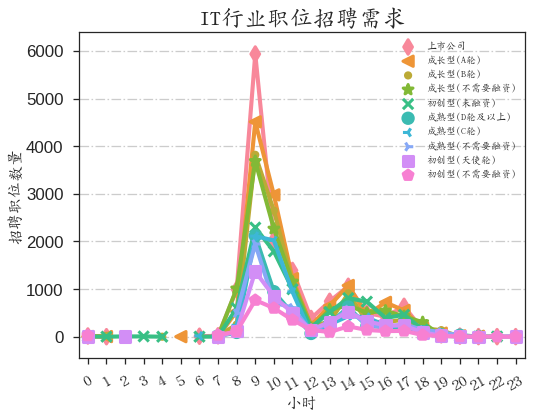
data_py = data[data["third_tag"] == u"Python"]
hour_cs = data_py.groupby(["hour", "company_size"])["salary"].aggregate(np.size).reset_index().sort("salary", ascending=False)
plt.figure(figsize=(8,6))
markers = [
'd', '<', '.', '*', 'x', 'o',
'3', '4', 's', 'p', ',', 'h', '1', 'H', '+',
'D', '^', '2','v', '>', '|', "_"
]
g = sns.pointplot(x="hour", y="salary", hue="company_size",
data=hour_cs, dodage=True, markers=markers, size=7)
plt.xticks(g.get_xticks(), fontproperties=font, fontsize=16, rotation=30)
plt.xlabel(u"小时", fontsize=16, fontproperties=font)
plt.ylabel(u"招聘职位数量", fontsize=16, fontproperties=font)
plt.title(u"Python职位招聘需求", fontproperties=font, fontsize=23)
plt.gca().yaxis.grid(True, linestyle = "-.",)
plt.legend(loc="best",prop=font, fontsize=15)
<matplotlib.legend.Legend at 0x7fc965e59c10>
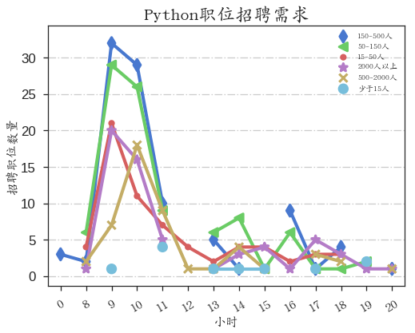
data_py = data[data["third_tag"] == u"Python"]
hour_fs = data_py.groupby(["hour", "finance_stage"])["salary"].aggregate(np.size).reset_index().sort("salary", ascending=False)
plt.figure(figsize=(8,6))
markers = [
'd', '<', '.', '*', 'x', 'o',
'3', '4', 's', 'p', ',', 'h', '1', 'H', '+',
'D', '^', '2','v', '>', '|', "_"
]
g = sns.pointplot(x="hour", y="salary", hue="finance_stage",
data=hour_fs, dodage=True, markers=markers, size=7)
plt.xticks(g.get_xticks(), fontproperties=font, fontsize=16, rotation=30)
plt.xlabel(u"小时", fontsize=16, fontproperties=font)
plt.ylabel(u"招聘职位数量", fontsize=16, fontproperties=font)
plt.title(u"Python职位招聘需求", fontproperties=font, fontsize=23)
plt.gca().yaxis.grid(True, linestyle = "-.",)
plt.legend(loc="best",prop=font, fontsize=15)
<matplotlib.legend.Legend at 0x7fc9639932d0>
plt.figure(figsize=(8,6))
g = sns.pointplot(x=hour_info.index, y=hour_info["property"], color="indianred", markers=".")
plt.xticks(g.get_xticks(), fontproperties=font, fontsize=16, rotation=30)
plt.xlabel(u"小时", fontsize=16, fontproperties=font)
plt.ylabel(u"招聘职位百分比 %", fontsize=16, fontproperties=font)
plt.title(u"IT职位招聘发布时间规律", fontproperties=font, fontsize=23)
plt.gca().yaxis.grid(True, linestyle = "-.",)
plt.legend(loc="best",prop=font, fontsize=15)
从24小时时段的招聘信息发布量可知，上午9-10点是职位发布的高峰期，其次是下午14点。因此，有求职需求的个人可以在上午11点之后查看拉勾网的招聘信息。
Hr最后登录时间规律
df_login = pd.read_csv("/home/darren/Desktop/lagou_position/scrapy/job_info_201784.csv", encoding="utf-8")
# 去除重复的招聘职位信息
df_login.drop_duplicates(inplace=True)
d_time = df_login.published_time.str.split(" ").str.get(0)
df_login["day"] = d_time
# 选择招聘发布时间最新一天的数据，2017-8-4，或2017-8-5，因为采集数据最后时间是8月5日
da = df_login[(df_login.day == "2017/8/4") | (df_login.day == "2017/8/5")]
# 进一步去重数据
da_col = da.columns.values.tolist()
da_col.remove(u"published_time")
row_duplicated = da[da.duplicated(da_col)].index.values
da.drop(row_duplicated, inplace=True)
# last_login格式正确
# da.to_csv("/home/darren/Desktop/lagou_drop_duplicated1.csv", index=False)
# 以下做法报错
# ValueError: timestamp out of range for platform localtime()/gmtime() function
# last_login_.head(1).map(lambda x: datetime.datetime.utcfromtimestamp(x).strftime("%Y-%m-%d %H:%M:%S"))
# 采用遍历依旧不行
# last_login_date = []
# for i in xrange(len(last_login_)):
# last_login_date.append(datetime.datetime.utcfromtimestamp(last_login_[i]).strftime("%Y-%m-%d %H:%M:%S") )
# 毫秒转换成秒
last_login_ = da["last_login"] / 1000
# 北京时间2017/8/4 5日 0:0:0 的时间戳分别为 1501776000 1501862400
# 先判断最后登录时间是否是8月4日
login_time_l = last_login_[last_login_.values >= 1501776000]
login_time_ = login_time_l[login_time_l <= 1501862400]
# 将一天登录时间从秒变成小时
last_login_s = ((login_time_ - 1501776000) / 3600).map(lambda x: np.int(x))
# 统计Hr在24小时内最后登录时间分布情况
last_login_time = last_login_s.value_counts()
login_property = last_login_time.values / np.float(last_login_time.values.sum()) *100
plt.figure(figsize=(8,6))
g = sns.pointplot(x=last_login_time.index, y=login_property, color="purple", markers="*")
plt.xticks(g.get_xticks(), fontproperties=font, fontsize=16, rotation=30)
plt.xlabel(u"小时", fontsize=16, fontproperties=font)
plt.ylabel(u"百分比 %", fontsize=16, fontproperties=font)
plt.title(u"Hr登录时间分布", fontproperties=font, fontsize=23)
plt.gca().yaxis.grid(True, linestyle = "-.",)
plt.legend(loc="best",prop=font, fontsize=15)
Hr最后登录时间分布图如上，Hr最后登录时间集中在下午，尤其是15-17点之间，结合同一天的招聘信息发布状况，投递简历的较佳时间段为上午11点-下午13点之间。
总结
当前，IT行业发展如火如荼，从IT行业的平均薪资便可窥一斑。从全国范围看，IT行业发展并不均衡，而是集中在一线和一些热门的二线城市，尤其是北上深广以及杭州，其中又以北京最为发达！
从各个城市的招聘职位需求看，北京的招聘职位最多，上海次之，从公司规模看中型公司的招聘寻求最大，大型公司次之，小型公司的需求量较小；从薪资上看，大型公司的薪资最高，其次是中型公司，小公司最低，因此，IT行业的最佳求职地为北京，公司可选择中型的上市或成熟型公司。
当然，这仅仅是从职位需求状况上分析，并没有结合求职者数量等其他信息进行对比分析，主要原因是这部分数据难采集！
IT行业职位需求最大的是技术类，薪资最高的是金融类，其次是技术类。
从后端开发的各个编程语言分析，Java的招聘需求是处于霸主地位，只是薪资略低。薪资最高的是各种算法类，包括数据挖掘、精准推荐等，其次是一些新兴语言，如Go、Python等。
Python的招聘规律和后端开发是一致的，整体而言，Python的招聘需求总量不多，但平均薪资较高。招聘需求较多的是一线城市的中型公司，薪资也比较高，仅略低于大型上市公司，学历要求本科居多，工作经验3-5和1-3年较多。
python招聘的具体岗位分布，以web开发居多，爬虫次之，由于有大量的职位标题并没有明确标明岗位的具体名称，因此，具体岗位分布并不准确，这还要结合职位详情页面进行分析。
此外，根据招聘岗位描述词汇生成的词云图可看到出现频率最高的词汇是“培训”、“扁平”、“平台”，体现出当今IT行业比较注重员工的培训及注重扁平化管理。
分析招聘职位的发布时间和Hr最后登录时间的折线图可知，职位发布主要集中在上午9点左右，而Hr最后登录时间集中在下午15-17点之间，因此，个人认为拉勾网投递招聘简历的较佳时间为上午11点-下午13点之间。